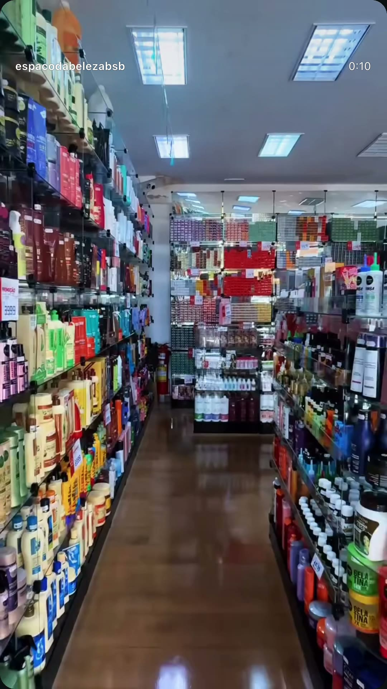
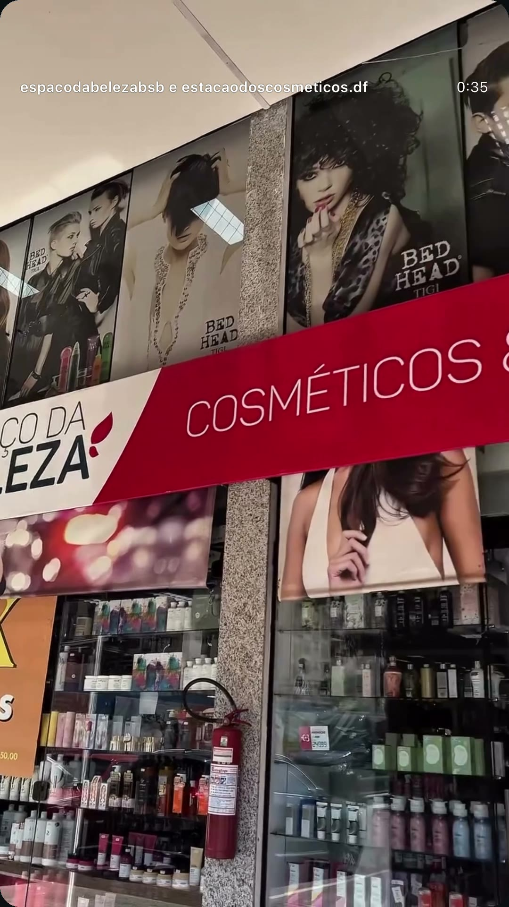
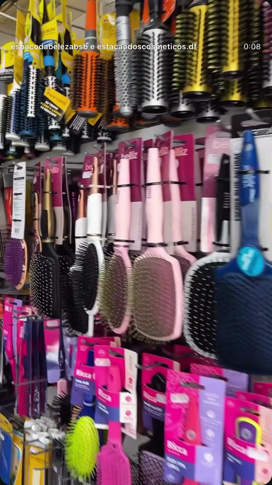
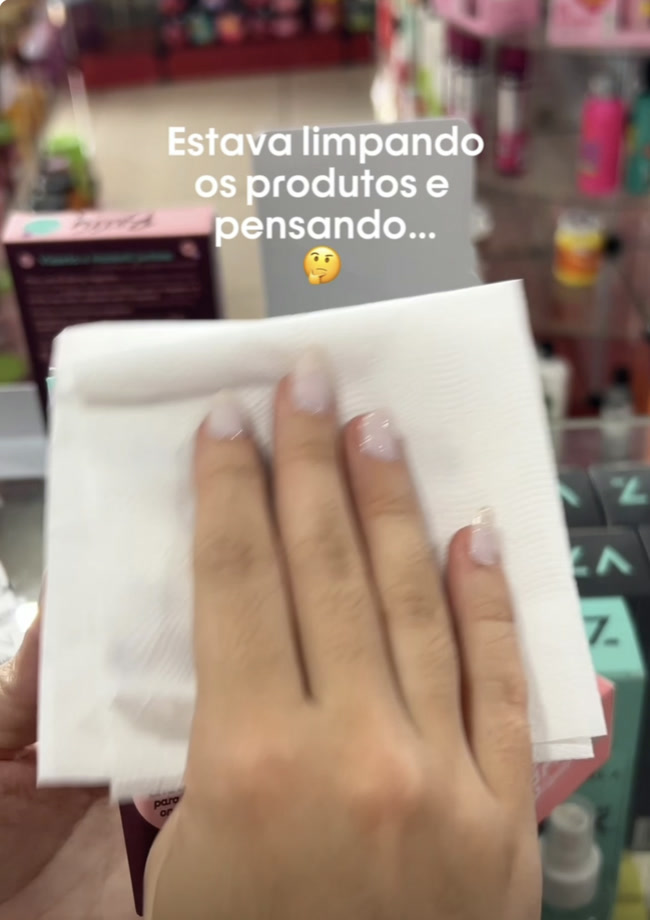
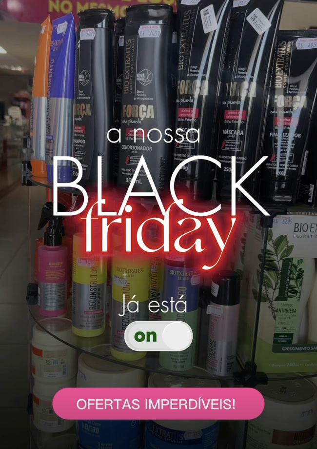
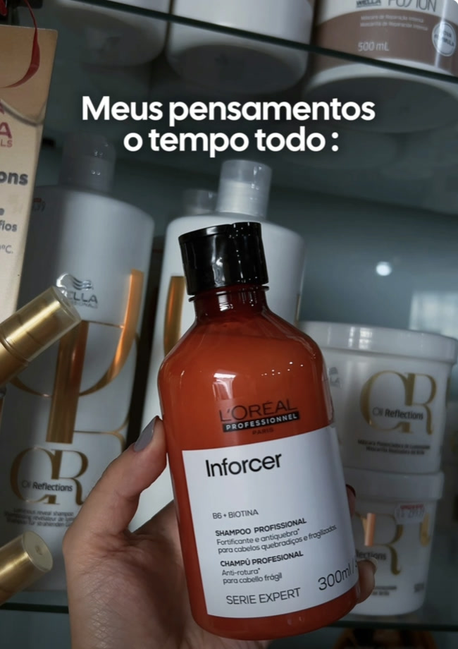
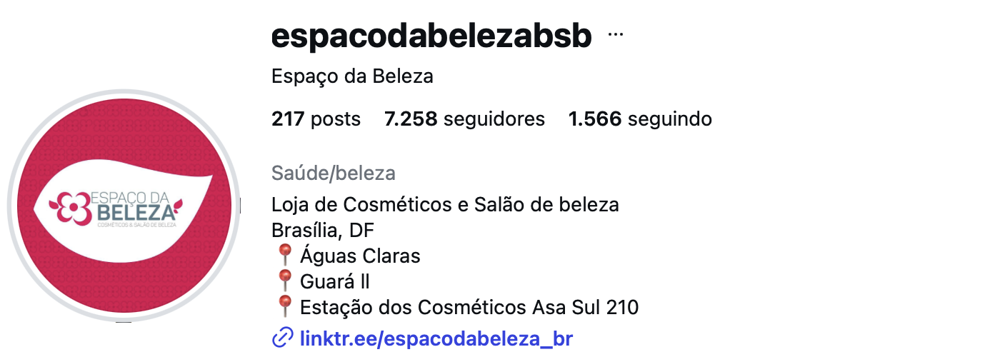
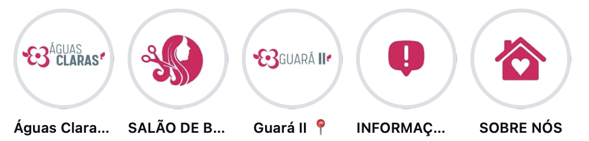
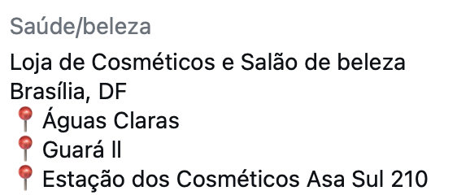

espacodabelezabsb
Preço
O preço é o fator que mais pesa na decisão de compra.
Relatório de pesquisa · versão interativa
Pesquisa de mercado sobre comportamento, experiência e fidelização das clientes.
Abre em tela cheia. Use ← → ou espaço para avançar e Esc para sair.



Pesquisa de mercado · IDP · 2026
Pesquisa de mercado: comportamento, experiência e fidelização.
O cliente e o desafio
Problema gerencial: como o Espaço da Beleza pode fazer mais clientes voltarem a comprar nas lojas físicas, sabendo que hoje é fácil comprar cosméticos pela internet, muitas vezes por um preço menor?
Problema de pesquisa
Quais fatores levam as consumidoras a escolher o Espaço da Beleza e a voltar, e como o Instagram e as avaliações online entram nessa decisão.
Nossas hipóteses · tiradas do plano da empresa
O preço é o fator que mais pesa na decisão de compra.
O atendimento e a orientação são um diferencial da loja física.
O Instagram aproxima as clientes e estimula a visita à loja.
Dados secundários
é a posição do Brasil no mercado de beleza e cuidados pessoais.
US$ 37,4 bilhões em vendas
de crescimento em cuidados com o cabelo, a categoria mais forte da loja.
novos estabelecimentos de beleza abertos no país.
Comprar perto de casa
Moradores que compram alimentação, higiene e limpeza na própria região. Não é um dado específico de cosméticos.
Metodologia
13 respostas · 14 perguntas
AmostragemPor conveniência, sem sorteio
1 especialista · Zoom
AmostragemIntencional, pela experiência
5 posts · 29 comentários · 22 avaliações
AmostragemSeleção intencional
Resultados · questionário
pessoas responderam.
12 já compraram na loja, 10 delas várias vezes.
Amostra pequena, por conveniência, quase toda de clientes atuais.
compram cosméticos uma vez por mês.
11 de 13 compram pelo menos uma vez por mês.
preferem lojas físicas a sites e aplicativos.
preferem produtos para cabelo.
gastam de R$ 50 a R$ 100 por compra.
se interessam por descontos em produtos.
querem encontrar mais promoções.
Questionário · decisão de compra
marcaram preço ou promoções.
citaram o atendimento, justamente o diferencial que a loja quer reforçar.
Entrevista em profundidade
Personal shopper de cosméticos
Síntese da conversa, sem citações literais. O foco dela é a venda online e os importados; o que disse sobre confiança vale também para a loja física.
Preço, exclusividade e confiança pesam juntos. A cliente quer saber se o produto é original e se serve para ela.
Na loja física dá para testar, ser orientada e levar o produto na hora.
Acompanhar a cliente do início ao fim, com atendimento humano e pós-venda.
Netnografia · Instagram
@espacodabelezabsb · números no momento da pesquisa
29 comentários em cinco publicações
Vídeo real do perfil, gravado na porta da loja



Reels gravados na loja (print de 25/11/2026)
“Eu quero conhecer essas tias! Kkkk”
“Preciso de um kit Loreal, pq o meu acabou. Vou passar com vocês sim.”
Humor gera conversa. Produto e preço geram “eu quero”.
Vontade de comprar não é venda: a pesquisa não mediu compras.Netnografia · Google
de nota média, em 22 avaliações.
avaliações com cinco estrelas.
avaliações com texto elogiam o atendimento ou os profissionais.
3 avaliações juntam atendimento e preço na mesma frase.
foram feitas há três anos ou mais. A reputação é boa, mas antiga.
Não incluímos prints das avaliações para preservar quem avaliou.
Juntando as três frentes
Base: 13 pessoas que responderam ao questionário.
Base: 9 avaliações do Google com texto.
Bases diferentes: não é uma comparação estatística entre as mesmas pessoas, e sim um contraste entre o que aparece quando perguntamos e o que aparece de forma espontânea. Clique para a conclusão →
A principal interpretação da pesquisa
Uma leitura construída a partir das três frentes da pesquisa. Não é uma relação de causa comprovada.
De volta ao começo
Nem tudo se confirma, e tudo bem: a pesquisa também mostra o que ainda precisa ser medido.
O preço é o fator que mais pesa na decisão de compra.
O atendimento e a orientação são um diferencial da loja física.
O Instagram aproxima as clientes e estimula a visita à loja.
Recomendações
Cinco ações em três pilares.
Clique em cada uma para ver a proposta.
O que traz a cliente até a loja.
O que ajuda a cliente a escolher.
O que traz a cliente de novo.
Limitações e próximo passo
Próximo passoEntrevistar diretamente as clientes da loja.
Obrigada!
Espaço da Beleza — Pesquisa de Mercado
IDP · Profa. Carolina Sampaio
Agatha Yasmin · Alice Rodrigues · Laila Gebrim · Valentina Abib
Problema de pesquisa
Quais fatores levam as consumidoras a escolher o Espaço da Beleza e a voltar a comprar lá, e como o Instagram e as avaliações online participam dessa decisão.
Objetivo geral: compreender o que influencia a decisão de compra e a fidelização das clientes, na loja física e nos canais digitais.
Frequência, categorias, gasto e canal preferido.
Dados secundários · setor
é a posição do Brasil no mercado mundial de beleza e cuidados pessoais.
em vendas de beleza e cuidados pessoais no Brasil.
foi o crescimento de cuidados com o cabelo, categoria em que o Brasil também é o 3º do mundo.
novos estabelecimentos de beleza abertos.
lugar mundial em produtos masculinos.
Dados secundários · regiões das lojas
Nas regiões onde a loja está, as compras do dia a dia ficam no próprio bairro.
Atenção: o dado fala de compras de alimentação, higiene e limpeza na própria região, e não especificamente de cosméticos. Ele mostra um hábito de comprar perto de casa.
127.952 moradores · 54,4% mulheres · idade média de 38,1 anos
141.872 moradores · 53,3% mulheres · idade média de 35,9 anos
Como fizemos a pesquisa
Netnografia é observar o que as pessoas dizem e fazem na internet, sem interagir.
Instrumentos de pesquisa
Questionário · Google Forms · 14 perguntas (12 fechadas, 2 abertas)
Entrevista em profundidade · roteiro
Netnografia · roteiro de observação
Coleta e amostragem
Questionário divulgado pelo WhatsApp
Contatos das integrantes do grupo
WhatsApp da própria loja
Gerente da lojacompartilhou o link num grupo de clientes
Público-alvo: consumidoras e consumidores de cosméticos, maiores de 18 anos, que compram ou podem comprar no Espaço da Beleza. As respostas chegaram em blocos, nos dias em que o link foi enviado.
Questionário
Não probabilística: respondeu quem estava ao nosso alcance, sem sorteio.
Entrevista
Especialista escolhida pela experiência com consumidoras.
Netnografia
Publicações recentes com comentários e todas as avaliações do Google.
Questionário · quem respondeu
pessoas responderam ao questionário.
Amostra pequena, por conveniência e formada principalmente por clientes atuais. Os números valem para quem respondeu.
Clique em cada número para ver quem é quem entre as 13 pessoas.
Questionário · rotina de compra
Resposta mais frequente em cada pergunta, entre os 13 respondentes.
compram cosméticos uma vez por mês.
Somando quem compra a cada 15 dias e toda semana, 11 de 13 compram pelo menos uma vez por mês.
preferem produtos para cabelo.
gastam de R$ 50 a R$ 100.
preferem lojas físicas a sites e aplicativos.
Questionário · marcas e ofertas
Marca preferida
Foi a marca mais citada, com folga.
se interessam por descontos em produtos.
gostariam de encontrar mais promoções.
valorizam preços acessíveis numa loja de beleza.
citaram kits promocionais2ª oferta mais citada; 4 dessas pessoas têm de 18 a 24 anos
pediram kits personalizadosna pergunta sobre o que querem encontrar na loja
Questionário · por idade
São sinais numa amostra pequena, e não conclusões sobre gerações inteiras.
Entrevista em profundidade
Personal shopper de cosméticos
Conversa gravada com autorização. O foco foi a venda online e os importados, especialidade dela; o que disse sobre confiança vale também para a loja física.
Quando o produto é exclusivo, a cliente aceita pagar mais.
A cliente quer saber se o produto combina com o cabelo ou a pele dela.
A diferença está no valor, nos sentidos, no tempo e na confiança.
Combinações que compensam para a cliente vendem mais do que só desconto.
Acompanhar a cliente do início ao fim, com atendimento humano.
Vídeos de aplicação, depoimentos e microinfluenciadoras.
Netnografia · Instagram
@espacodabelezabsb
Números no momento da pesquisa. Não são dados em tempo real.


Prints de 25/11/2026: o perfil já mostrava 217 posts e 7.258 seguidores. Na coleta, eram 212 e 7.260.
Netnografia · conteúdo
Reels gravados na própria loja: humor, ofertas e produtos na mão.
Exemplos de Reels do perfil (print de 25/11/2026).
Exemplo real
O vídeo apresenta o cartão fidelidade da loja e foi publicado em parceria com a Estação dos Cosméticos. É o formato que aproxima: gente real, linguagem simples, oferta clara.
espacodabelezabsb + estacaodoscosmeticos.dfVídeo com fala: use o botão CC para mostrar ou esconder as legendas.
Netnografia · 29 comentários
Cada quadrado é um dos 29 comentários. Nenhum comentário negativo foi encontrado.
“Eu quero conhecer essas tias! Kkkk”
“Preciso de um kit Loreal, pq o meu acabou. Vou passar com vocês sim.”
“Tem algum produto para homem?”
2 pessoas diferentes perguntaram“Eu amo os produtos e a [atendente] é maravilhosa nas dicas!”
Recomendações
Cinco ações que juntam o que atrai (preço e oferta) com o que faz voltar (orientação e confiança).
Ressecamento, transição capilar, coloração.
Vídeos curtos com a equipe indicando produtos.
Lista de transmissão para promoções e reposição.
QR code no caixa e respostas às avaliações.
Bio, WhatsApp direto, destaques e respostas.
Recomendações · atrair com valor
Kits com preço dentro do que a maioria gasta (até R$ 200), mostrando quanto a cliente economiza em relação aos produtos avulsos.
Ilustração conceitual. Produtos e preços seriam definidos pela loja.
Uma série de vídeos curtos com a equipe: o problema, o produto, como usar e o preço. Junta o que já chama atenção (pessoas) com o que gera vontade de comprar (oferta).
Roteiro sugerido para cada vídeo. Imagens: quadros reais da loja.
Recomendações · cuidar depois da compra
Uma lista de transmissão por unidade, só com clientes que autorizarem, para avisar promoções e lembrar da reposição.
Exemplo de mensagem. Textos entre colchetes seriam preenchidos pela loja.
Pedir avaliações no Google com um QR code no caixa e responder a quem avaliar. Hoje, 20 das 22 avaliações têm três anos ou mais.
Ilustração conceitual de display de balcão.
Recomendações · 05
Hoje · print real

Diz o que é e onde fica. Link para o Linktree. Destaques por unidade.
Proposta · mockup
PropostaA gente te ajuda a escolher o produto certo para o seu cabelo.
Águas Claras · Guará II · Estação dos Cosméticos (210 Sul)
Com transparência
Os resultados valem para quem participou. Eles apontam caminhos, mas não falam por toda a clientela.
Próximo passo
Entrevistar diretamente as clientes da loja.
Uma amostra pequena para generalizar.
Não probabilística: sem sorteio.
O link circulou em grupos ligados à loja.
Enviadas com dois minutos de diferença; podem ser da mesma pessoa.
Com uma especialista focada em importados.
Cinco publicações do Instagram.
Evidências
Fundamentação
As mesmas fontes citadas no relatório entregue à professora.
Abrir o relatório completo (PDF) ↗As mesmas fontes do relatório entregue à professora.
Questionário com 13 respostas (3 a 18/11/2026), entrevista em profundidade com Glenda Oliveira (17/11/2026) e netnografia do perfil @espacodabelezabsb e das avaliações da loja no Google. A transcrição da entrevista e as respostas do formulário estão nos anexos do relatório.
A apresentação nunca avança sozinha. Quem controla o ritmo é vocês.
No slide 11 (o grande insight), um clique revela a frase final. Os pontinhos no canto inferior direito indicam a etapa.
Os dados completos ficam numa seção à parte, fora dos 14 slides: abra pelo menu de capítulos, pela tecla D ou pelos botões “+” no rodapé de cada slide. O botão “Voltar ao slide” retorna para onde vocês estavam.